按感觉挑一个，直接拿走。不用先懂设计流派：每张图都是该风格真实渲染的一屏，看对眼就点进去，下载一个 zip 就带走全部代码与规格。需要 CSS 手法、色值、标杆网站时，切到右上角「列表」。 来源：视频 · 代码仓库 · UI UX Pro Max Skill
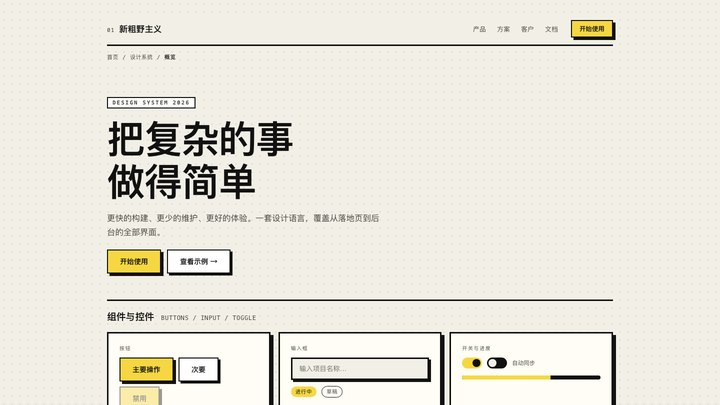
📋 复制给 AI 请用「新粗野主义」（Neo-Brutalism）这套视觉风格，帮我做一个页面。 它长什么样：把网页当作未经打磨的原件，用粗黑边框和生硬投影表达诚实与反叛。 要抓住这几点：3px 纯黑边框 / 零圆角块状卡片 / 6px 硬投影无模糊 / 点阵网格背景 / 等宽大写标签 / EXP.01 实验编号 配色：背景 #f2f0e6｜卡片 #fffdf5｜文字 #111111｜强调色 #f6d743 形状：圆角 0｜卡片边 3px solid #111｜卡片阴影 6px 6px 0 #111 不要出现：任何圆角、模糊阴影、渐变、浅灰文字、衬线字体 我的需求：<换成你要做的页面> 01 粗野与反设计 新粗野主义Neo-Brutalism 把网页当作未经打磨的原件，用粗黑边框和生硬投影表达诚实与反叛。 导出风格包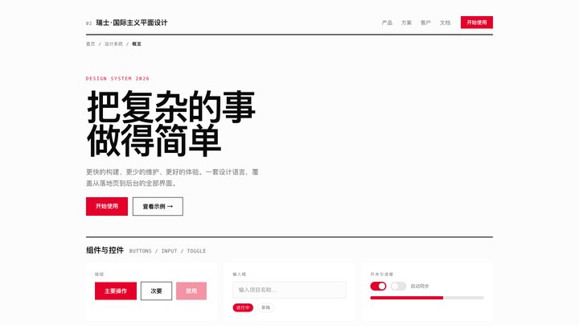
📋 复制给 AI 请用「瑞士·国际主义平面设计」（Swiss Style）这套视觉风格，帮我做一个页面。 它长什么样：源自 1950s 苏黎世与巴塞尔，用网格和字号层级取代一切装饰。 要抓住这几点：12 列网格 / 非对称 4+8 布局 / 900 字重无衬线标题 / 墨·灰·纸·线四色 / 目录式编号 / 全站 0 圆角 配色：背景 #fcfcfc｜卡片 #ffffff｜文字 #0a0a0a｜强调色 #e4002b 形状：圆角 0｜卡片边 none｜卡片阴影 none 不要出现：圆角、卡片阴影、装饰图形、居中对称的居中排版 我的需求：<换成你要做的页面> 02 排版与网格 瑞士·国际主义平面设计Swiss Style 源自 1950s 苏黎世与巴塞尔，用网格和字号层级取代一切装饰。 导出风格包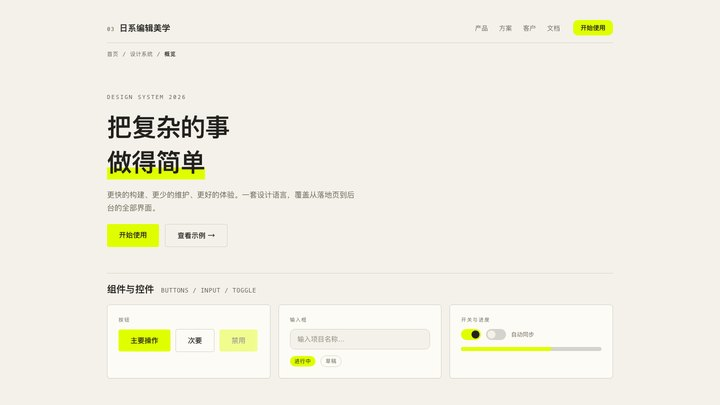
📋 复制给 AI 请用「日系编辑美学」（Japanese Editorial）这套视觉风格，帮我做一个页面。 它长什么样：把杂志版式搬上网页：暖纸底、极细分割线、一处荧光色点睛。 要抓住这几点：#f1f0ea 纸色底 / 低对比暖灰分割线 / 中日文混排+等宽数字 / 荧光黄标题下划线 / 超大留白 / 低饱和暖色谱 配色：背景 #f3f1ea｜卡片 #fdfbf5｜文字 #22211d｜强调色 #dfff00 形状：圆角 6px｜卡片边 1px solid var(--line)｜卡片阴影 0 1px 0 rgba(0,0,0,.03) 不要出现：高饱和撞色、粗黑边、重阴影、等宽标题 我的需求：<换成你要做的页面> 03 排版与网格 日系编辑美学Japanese Editorial 把杂志版式搬上网页：暖纸底、极细分割线、一处荧光色点睛。 导出风格包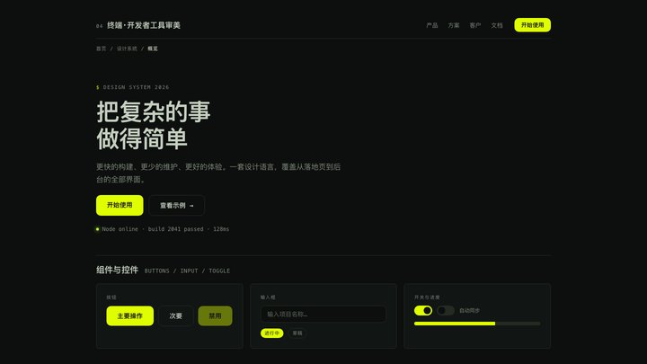
📋 复制给 AI 请用「终端·开发者工具审美」（Terminal CLI Aesthetic）这套视觉风格，帮我做一个页面。 它长什么样：把命令行搬进浏览器，用等宽字体和状态灯建立工程可信感。 要抓住这几点：全站等宽字体 / $ 提示符与路径式文案 / 绿色脉冲状态点 / 墨黑+灰绿+酸黄冷工业色 / ASCII 装饰 配色：背景 #0d0f0e｜卡片 #111514｜文字 #c5d0c0｜强调色 #dfff00 形状：圆角 6px｜卡片边 1px solid #242b22｜卡片阴影 none 不要出现：衬线字体、圆角、亮色块、摄影图当主视觉 我的需求：<换成你要做的页面> 04 科技与未来 终端·开发者工具审美Terminal CLI Aesthetic 把命令行搬进浏览器，用等宽字体和状态灯建立工程可信感。 导出风格包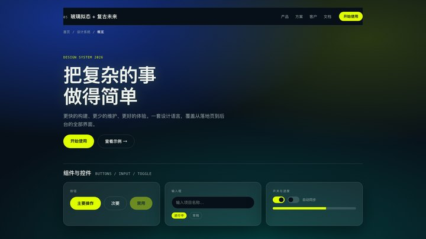
📋 复制给 AI 请用「玻璃拟态 + 复古未来」（Glassmorphism + Retrofuturism）这套视觉风格，帮我做一个页面。 它长什么样：毛玻璃卡片浮在发光背景上，再叠一层 CRT 扫描线，介于高级与怀旧之间。 要抓住这几点：backdrop-filter blur(16px) / 半透明卡片+1px 高光描边 / 扫描线 overlay / 酸黄×深蓝高对比 配色：背景 #071018｜卡片 rgba(255,255,255,.07)｜文字 #eef2ec｜强调色 #dfff00 形状：圆角 18px｜卡片边 1px solid rgba(255,255,255,.16)｜卡片阴影 0 24px 60px rgba(0,0,0,.45) 不要出现：不透明实心卡片、无模糊、暖色调、细边框 我的需求：<换成你要做的页面> 05 质感与视觉基调 玻璃拟态 + 复古未来Glassmorphism + Retrofuturism 毛玻璃卡片浮在发光背景上，再叠一层 CRT 扫描线，介于高级与怀旧之间。 导出风格包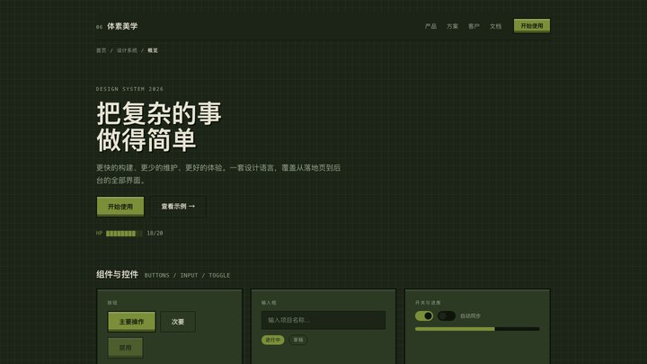
📋 复制给 AI 请用「体素美学」（Voxel Aesthetic）这套视觉风格，帮我做一个页面。 它长什么样：用 16×16 的方块世界语言做界面，像在网页里开了一局沙盒游戏。 要抓住这几点：image-rendering: pixelated / 方块凸凹边框 / Press Start 2P 像素字 / 大地限色板 / steps() 帧动画 配色：背景 #1b2417｜卡片 #2c3a24｜文字 #e8e4d4｜强调色 #7B8F3A 形状：圆角 0｜卡片边 3px solid #0e140b｜卡片阴影 inset 0 -6px 0 rgba(0,0,0,.35),inset 0 4px 0 rgba(255,255,255,.07) 不要出现：圆角、抗锯齿渐变、细字重、彩色渐变 我的需求：<换成你要做的页面> 06 复古与怀旧 体素美学Voxel Aesthetic 用 16×16 的方块世界语言做界面，像在网页里开了一局沙盒游戏。 导出风格包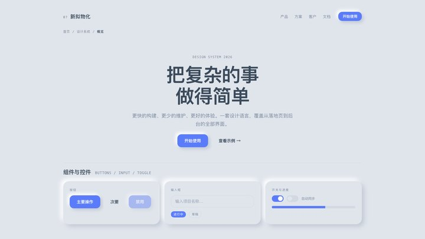
📋 复制给 AI 请用「新拟物化」（Neumorphism）这套视觉风格，帮我做一个页面。 它长什么样：元素与背景同色，只靠一明一暗两道光「挤」出立体感。 要抓住这几点：同色底 #e0e5ec / 双向软阴影 8px·16px / inset 按压凹陷 / 20px 大圆角 / 低对比灰蓝 配色：背景 #e0e5ec｜卡片 #e0e5ec｜文字 #3b4a5a｜强调色 #5b7cfa 形状：圆角 20px｜卡片边 none｜卡片阴影 8px 8px 16px #c2c9d4,-8px -8px 16px #ffffff 不要出现：硬阴影、深色底、高对比描边、高饱和色 我的需求：<换成你要做的页面> 07 质感与视觉基调 新拟物化Neumorphism 元素与背景同色，只靠一明一暗两道光「挤」出立体感。 导出风格包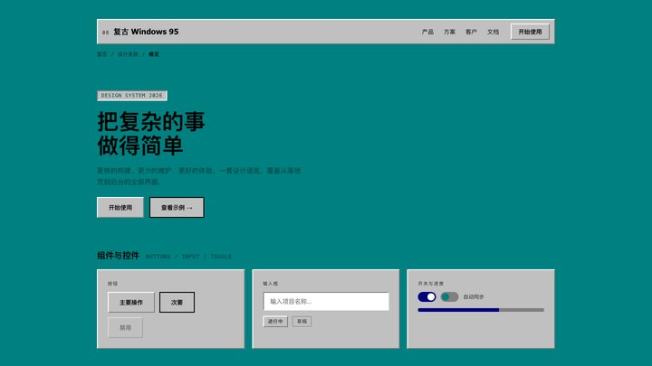
📋 复制给 AI 请用「复古 Windows 95」（Retro Win95）这套视觉风格，帮我做一个页面。 它长什么样：完整复刻 1995 年的桌面系统：窗口、任务栏、开始按钮一个不少。 要抓住这几点：#008080 桌面 / outset·inset 3D 边框 / #c0c0c0 面板 / MS Sans Serif / 虚线 focus 框 / 像素图标 配色：背景 #008080｜卡片 #c0c0c0｜文字 #000000｜强调色 #000080 形状：圆角 0｜卡片边 2px solid｜卡片阴影 none 不要出现：圆角、扁平阴影、现代无衬线、渐变 我的需求：<换成你要做的页面> 08 复古与怀旧 复古 Windows 95Retro Win95 完整复刻 1995 年的桌面系统：窗口、任务栏、开始按钮一个不少。 导出风格包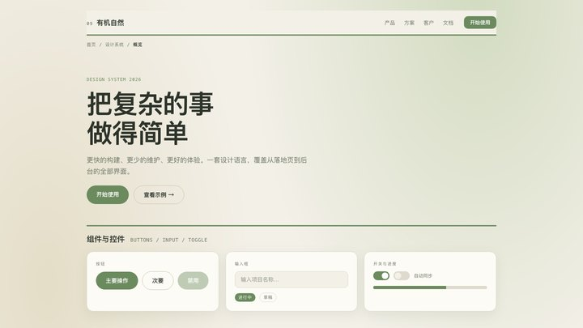
📋 复制给 AI 请用「有机自然」（Biophilic Design）这套视觉风格，帮我做一个页面。 它长什么样：把阳光、植物和手工纸的质感搬进屏幕，让界面会呼吸。 要抓住这几点：奶油米+鼠尾草绿 / radial-gradient 树影光斑 / 纸感卡片 / 16px 大圆角 / 漫反射弱阴影 配色：背景 #f3f0e8｜卡片 #fdfbf5｜文字 #2c332a｜强调色 #6b8a5e 形状：圆角 16px｜卡片边 1px solid var(--line)｜卡片阴影 0 10px 30px rgba(90,110,80,.10) 不要出现：纯黑、高饱和荧光、直角、重投影 我的需求：<换成你要做的页面> 09 自然·人文·无障碍 有机自然Biophilic Design 把阳光、植物和手工纸的质感搬进屏幕，让界面会呼吸。 导出风格包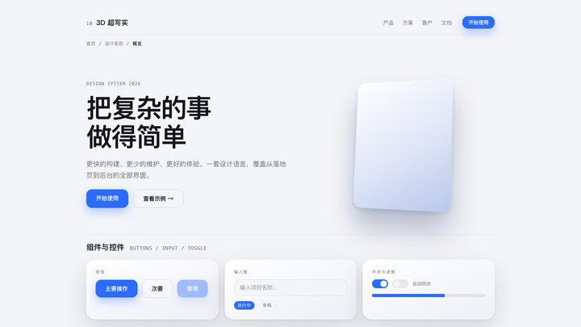
📋 复制给 AI 请用「3D 超写实」（3D & Hyperrealism）这套视觉风格，帮我做一个页面。 它长什么样：用透视、多层阴影和材质渐变，在平面上伪造真实的三维空间。 要抓住这几点：perspective 1000px / hover 多轴位移+旋转 / 多层 rgba 光照阴影 / 玻璃金属渐变 / 平滑缓动 配色：背景 #f4f5f8｜卡片 linear-gradient(160deg,#ffffff,#eef0f6)｜文字 #14161a｜强调色 #2b6cff 形状：圆角 22px｜卡片边 1px solid rgba(255,255,255,.9)｜卡片阴影 0 24px 60px rgba(20,30,60,.14),0 2px 6px rgba(20,30,60,.06) 不要出现：扁平无层次、零阴影、纯二维色块 我的需求：<换成你要做的页面> 10 科技与未来 3D 超写实3D & Hyperrealism 用透视、多层阴影和材质渐变，在平面上伪造真实的三维空间。 导出风格包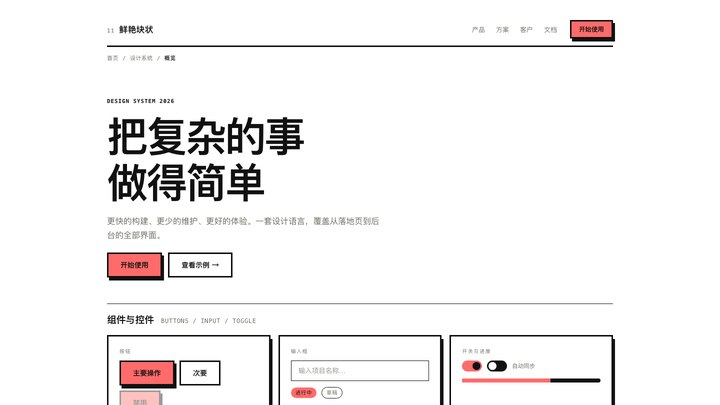
📋 复制给 AI 请用「鲜艳块状」（Vibrant & Block-based）这套视觉风格，帮我做一个页面。 它长什么样：大色块 + 撞色 + 粗边框，把页面做成一块块高饱和积木。 要抓住这几点：红黄高饱和撞色 / 4-8px 硬阴影 / 3px 黑边 / 零圆角 / 白底衬托色彩张力 配色：背景 #ffffff｜卡片 #ffffff｜文字 #111111｜强调色 #ff6b6b 形状：圆角 0｜卡片边 3px solid #111｜卡片阴影 4px 8px 0 #111 不要出现：低饱和、细边框、留白过多、灰度照片 我的需求：<换成你要做的页面> 11 粗野与反设计 鲜艳块状Vibrant & Block-based 大色块 + 撞色 + 粗边框，把页面做成一块块高饱和积木。 导出风格包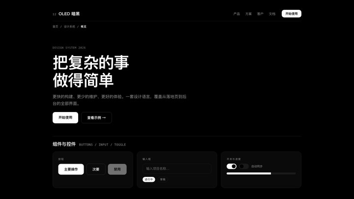
📋 复制给 AI 请用「OLED 暗黑」（Dark Mode OLED）这套视觉风格，帮我做一个页面。 它长什么样：为纯黑屏幕优化的暗色方案：黑得彻底、亮得克制。 要抓住这几点：#000 纯黑底 / #0a0a0a 卡片+1px #1a1a1a 描边 / 白字灰文 / 反色按钮作视觉锚点 / 省电 配色：背景 #000000｜卡片 #0a0a0a｜文字 #ffffff｜强调色 #ffffff 形状：圆角 14px｜卡片边 1px solid #1a1a1a｜卡片阴影 none 不要出现：任何非黑背景、浅灰卡片、彩色强调色 我的需求：<换成你要做的页面> 12 质感与视觉基调 OLED 暗黑Dark Mode OLED 为纯黑屏幕优化的暗色方案：黑得彻底、亮得克制。 导出风格包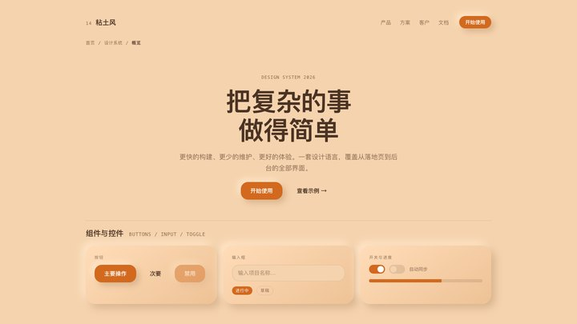
📋 复制给 AI 请用「粘土风」（Claymorphism）这套视觉风格，帮我做一个页面。 它长什么样：元素像被手指揉圆的粘土，柔软、有体积、没有一条硬边。 要抓住这几点：双向软阴影+内阴影做体积 / 24px 超大圆角 / 暖杏→可可色 / 无边框只靠光影 配色：背景 #f5d3ae｜卡片 linear-gradient(145deg,#ffdcb8,#eec296)｜文字 #4a3324｜强调色 #d2691e 形状：圆角 24px｜卡片边 none｜卡片阴影 10px 10px 20px #d9b48f,-10px -10px 20px #ffe6c9 不要出现：尖角、硬阴影、高饱和、1px 细边框 我的需求：<换成你要做的页面> 14 质感与视觉基调 粘土风Claymorphism 元素像被手指揉圆的粘土，柔软、有体积、没有一条硬边。 导出风格包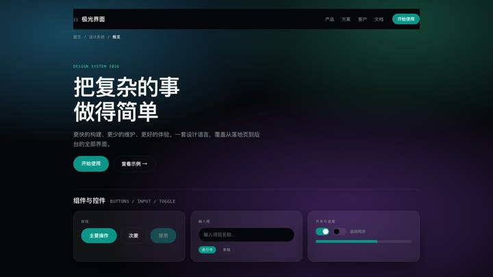
📋 复制给 AI 请用「极光界面」（Aurora UI）这套视觉风格，帮我做一个页面。 它长什么样：深色底上流动的极光色斑配毛玻璃，近年 SaaS 的「高级感模板」。 要抓住这几点：多层 radial-gradient 光斑 / blur(10px) 毛玻璃 / 翡翠绿按钮 / 1px 微光描边 配色：背景 #06070a｜卡片 rgba(255,255,255,.05)｜文字 #f2f6f4｜强调色 #0d9488 形状：圆角 18px｜卡片边 1px solid rgba(255,255,255,.09)｜卡片阴影 0 24px 60px rgba(0,0,0,.5) 不要出现：纯色背景、不透明卡片、暖色、硬边 我的需求：<换成你要做的页面> 15 质感与视觉基调 极光界面Aurora UI 深色底上流动的极光色斑配毛玻璃，近年 SaaS 的「高级感模板」。 导出风格包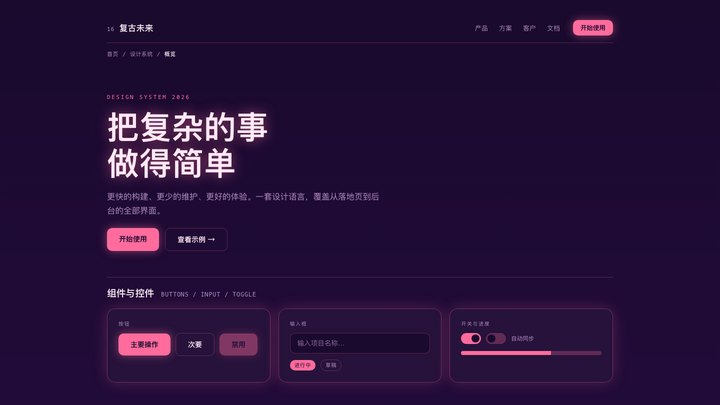
📋 复制给 AI 请用「复古未来」（Retro-Futurism）这套视觉风格，帮我做一个页面。 它长什么样：80 年代人们想象的未来：太空紫、霓虹粉、会发光的按钮。 要抓住这几点：#1a0a2e 太空紫 / 霓虹粉发光辉影 / 半透明紫卡片 / 80s 科幻标题 / 比赛博朋克更暖 配色：背景 #1a0a2e｜卡片 rgba(40,20,60,.8)｜文字 #ffe9f4｜强调色 #ff6b9d 形状：圆角 16px｜卡片边 1px solid rgba(255,107,157,.35)｜卡片阴影 0 0 30px rgba(255,107,157,.22) 不要出现：冷灰、无发光、扁平无辉光、极简排版 我的需求：<换成你要做的页面> 16 复古与怀旧 复古未来Retro-Futurism 80 年代人们想象的未来：太空紫、霓虹粉、会发光的按钮。 导出风格包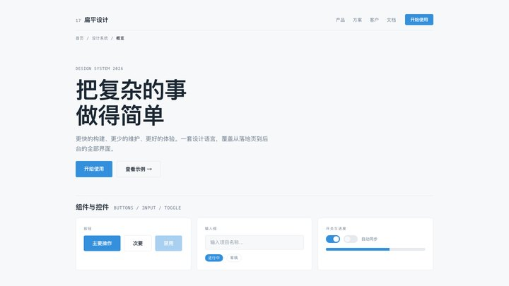
📋 复制给 AI 请用「扁平设计」（Flat Design）这套视觉风格，帮我做一个页面。 它长什么样：去掉一切阴影、渐变和纹理，只留颜色、形状和字。 要抓住这几点：零阴影零渐变 / 纯色块 / 品牌蓝 #3490dc / 3-4px 小圆角 / 渲染极快 配色：背景 #f7f8fa｜卡片 #ffffff｜文字 #1b2733｜强调色 #3490dc 形状：圆角 4px｜卡片边 1px solid #e6eaee｜卡片阴影 none 不要出现：任何阴影、渐变、拟物质感、长投影 我的需求：<换成你要做的页面> 17 质感与视觉基调 扁平设计Flat Design 去掉一切阴影、渐变和纹理，只留颜色、形状和字。 导出风格包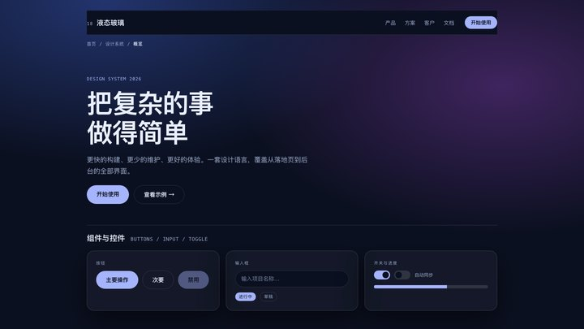
📋 复制给 AI 请用「液态玻璃」（Liquid Glass）这套视觉风格，帮我做一个页面。 它长什么样：Apple 2025 年的设计语言：界面像一层会折射背景的液态玻璃。 要抓住这几点：blur(20px) 强模糊 / 极透卡片 / 16px 大圆角模拟表面张力 / 随内容变色的微光描边 / 高光流动 配色：背景 #0b1020｜卡片 rgba(255,255,255,.035)｜文字 #eaf0ff｜强调色 #a5b4fc 形状：圆角 18px｜卡片边 1px solid rgba(255,255,255,.14)｜卡片阴影 0 24px 60px rgba(0,0,0,.5) 不要出现：不透明卡片、硬边、纯色底、重描边 我的需求：<换成你要做的页面> 18 质感与视觉基调 液态玻璃Liquid Glass Apple 2025 年的设计语言：界面像一层会折射背景的液态玻璃。 导出风格包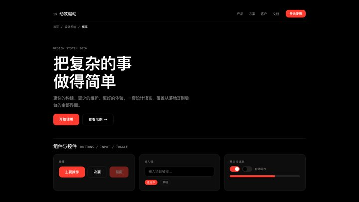
📋 复制给 AI 请用「动效驱动」（Motion-Driven）这套视觉风格，帮我做一个页面。 它长什么样：页面几乎靠动效讲故事，滚动、悬停、转场本身就是内容。 要抓住这几点：弹簧缓动回弹 / hover 缩放旋转 / 滚动驱动动画 / 暗色舞台 / 尊重 prefers-reduced-motion 配色：背景 #000000｜卡片 #0d0d0d｜文字 #ffffff｜强调色 #ff3b30 形状：圆角 16px｜卡片边 1px solid #222｜卡片阴影 none 不要出现：静态无反馈、无过渡、纯色平涂 我的需求：<换成你要做的页面> 19 动态与交互 动效驱动Motion-Driven 页面几乎靠动效讲故事，滚动、悬停、转场本身就是内容。 导出风格包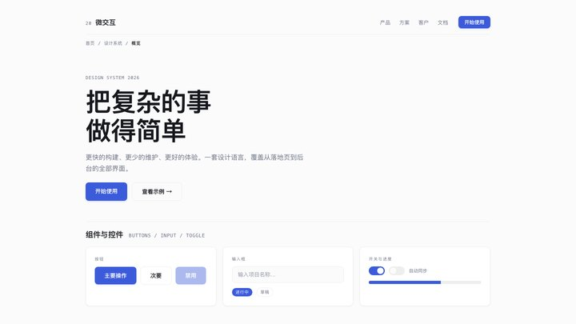
📋 复制给 AI 请用「微交互」（Micro-interactions）这套视觉风格，帮我做一个页面。 它长什么样：不追求视觉冲击，而是在每个按钮、每个状态里塞进恰到好处的反馈。 要抓住这几点：按压 scale(0.95) / 200-300ms 标准缓动 / 渐进阴影 / hover 抬升 2px / 1px 精确描边 配色：背景 #fbfbfc｜卡片 #ffffff｜文字 #16181d｜强调色 #3b5bdb 形状：圆角 10px｜卡片边 1px solid #eee｜卡片阴影 0 2px 4px rgba(0,0,0,.04) 不要出现：跳变式状态切换、无过渡、强装饰 我的需求：<换成你要做的页面> 20 动态与交互 微交互Micro-interactions 不追求视觉冲击，而是在每个按钮、每个状态里塞进恰到好处的反馈。 导出风格包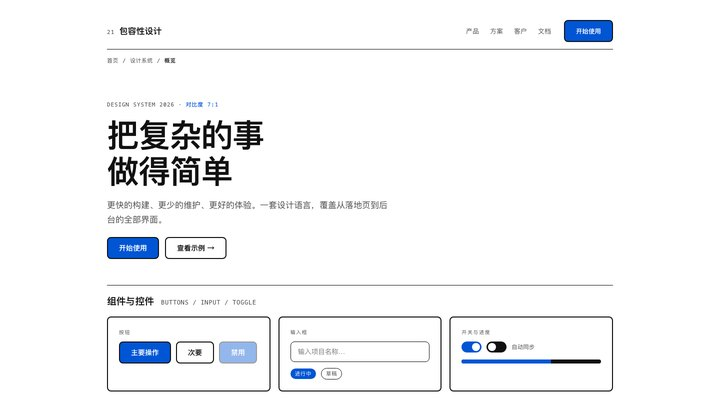
📋 复制给 AI 请用「包容性设计」（Inclusive Design）这套视觉风格，帮我做一个页面。 它长什么样：假设用户有视力、运动、认知等各种差异，让所有人用同一个界面。 要抓住这几点：高对比粗边框 / 大触摸目标 / 可见焦点导航 / ≥16px 字号+1.6 行高 / 信息不只靠颜色 配色：背景 #ffffff｜卡片 #ffffff｜文字 #111111｜强调色 #0055d4 形状：圆角 8px｜卡片边 2px solid #111｜卡片阴影 none 不要出现：低对比、隐藏 focus、小触摸目标、仅靠颜色 我的需求：<换成你要做的页面> 21 自然·人文·无障碍 包容性设计Inclusive Design 假设用户有视力、运动、认知等各种差异，让所有人用同一个界面。 导出风格包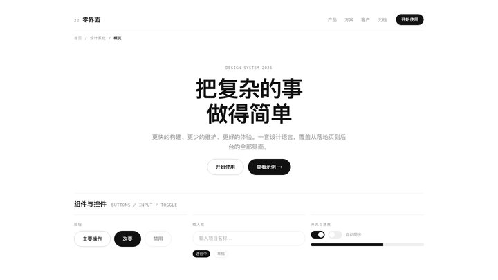
📋 复制给 AI 请用「零界面」（Zero Interface）这套视觉风格，帮我做一个页面。 它长什么样：界面退到近乎不存在，只留文字和留白，交互靠对话而非点击。 要抓住这几点：透明无边框卡片 / 无装饰性 hover / 留白即层级 / 单一输入框 / 适合 AI 与语音场景 配色：背景 #ffffff｜卡片 transparent｜文字 #111111｜强调色 #111111 形状：圆角 0｜卡片边 none｜卡片阴影 none 不要出现：边框、阴影、装饰元素、多层级 我的需求：<换成你要做的页面> 22 科技与未来 零界面Zero Interface 界面退到近乎不存在，只留文字和留白，交互靠对话而非点击。 导出风格包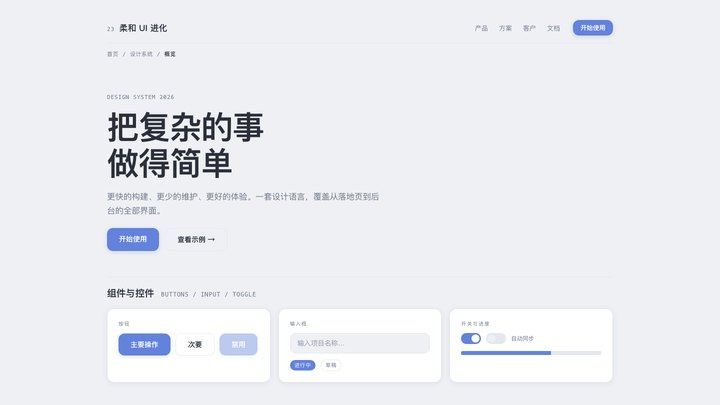
📋 复制给 AI 请用「柔和 UI 进化」（Soft UI Evolution）这套视觉风格，帮我做一个页面。 它长什么样：新拟物与扁平之间的企业级折中：有一点软，但绝不牺牲清晰。 要抓住这几点：1px 边框+双层柔阴影 / 浅蓝灰底 #eef0f4 / 蓝紫按钮 #6382dc / 14px 圆角软垫感 配色：背景 #eef0f4｜卡片 #ffffff｜文字 #2a2f3a｜强调色 #6382dc 形状：圆角 14px｜卡片边 1px solid #e4e7ee｜卡片阴影 0 2px 12px rgba(40,50,80,.08) 不要出现：硬阴影、纯黑、高饱和、直角 我的需求：<换成你要做的页面> 23 质感与视觉基调 柔和 UI 进化Soft UI Evolution 新拟物与扁平之间的企业级折中：有一点软，但绝不牺牲清晰。 导出风格包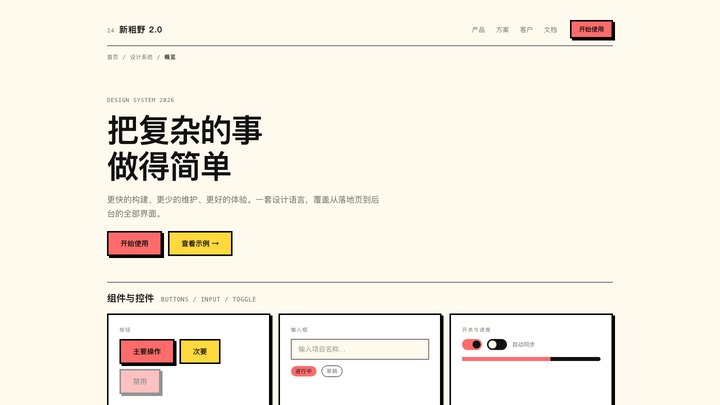
📋 复制给 AI 请用「新粗野 2.0」（Neubrutalism）这套视觉风格，帮我做一个页面。 它长什么样：粗野主义的乐观版：奶油底、红黄撞色、粗黑边，年轻品牌的标准动作。 要抓住这几点：#fffaee 奶油底 / 红黄撞色 / 3px 黑边 / 4px 无模糊硬阴影 / 零圆角 配色：背景 #fffaee｜卡片 #ffffff｜文字 #111111｜强调色 #ff6b6b 形状：圆角 0｜卡片边 3px solid #000｜卡片阴影 4px 4px 0 #000 不要出现：灰白底、冷色、细边框、保守排版 我的需求：<换成你要做的页面> 24 粗野与反设计 新粗野 2.0Neubrutalism 粗野主义的乐观版：奶油底、红黄撞色、粗黑边，年轻品牌的标准动作。 导出风格包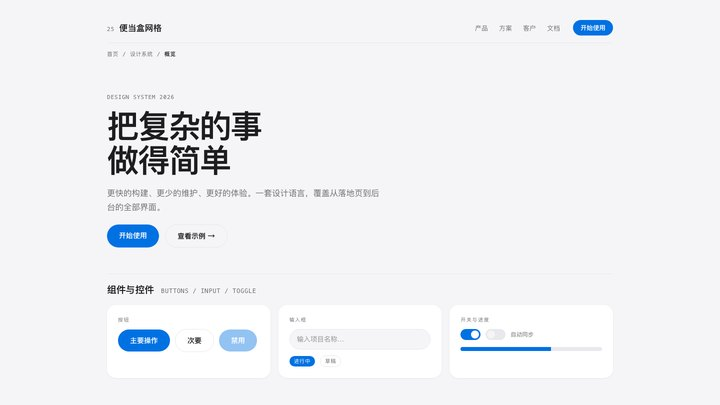
📋 复制给 AI 请用「便当盒网格」（Bento Box Grid）这套视觉风格，帮我做一个页面。 它长什么样：像日式便当一样把不等大的圆角卡片拼在一起，一屏讲清所有卖点。 要抓住这几点：grid-column·row span 拼贴 / Apple 灰 #f5f5f7 / 18px 圆角 / 无边框靠留白分区 / 胶囊按钮 配色：背景 #f5f5f7｜卡片 #ffffff｜文字 #1d1d1f｜强调色 #0071e3 形状：圆角 18px｜卡片边 none｜卡片阴影 0 1px 3px rgba(0,0,0,.06) 不要出现：边框、浓阴影、非对齐、杂乱拼贴 我的需求：<换成你要做的页面> 25 排版与网格 便当盒网格Bento Box Grid 像日式便当一样把不等大的圆角卡片拼在一起，一屏讲清所有卖点。 导出风格包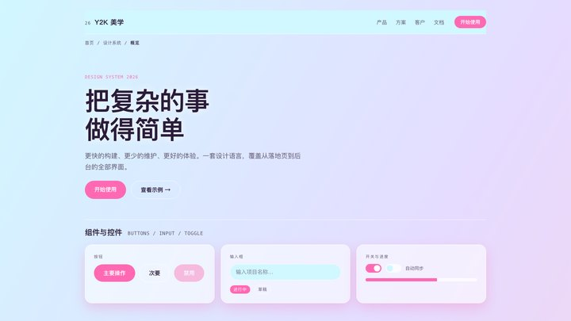
📋 复制给 AI 请用「Y2K 美学」（Y2K Aesthetic）这套视觉风格，帮我做一个页面。 它长什么样：千禧年对未来的想象：冰蓝粉渐变、金属高光、圆润到发亮的控件。 要抓住这几点：冰蓝→樱花粉渐变 / 磨砂半透明 / 粉红 #ff69b4 主色+辉光 / 16px 胶囊圆角 配色：背景 #d1f7ff｜卡片 rgba(255,255,255,.55)｜文字 #2b1b3a｜强调色 #ff69b4 形状：圆角 18px｜卡片边 1px solid rgba(255,255,255,.85)｜卡片阴影 0 12px 30px rgba(255,105,180,.28) 不要出现：暗色、低饱和、直角、无高光 我的需求：<换成你要做的页面> 26 复古与怀旧 Y2K 美学Y2K Aesthetic 千禧年对未来的想象：冰蓝粉渐变、金属高光、圆润到发亮的控件。 导出风格包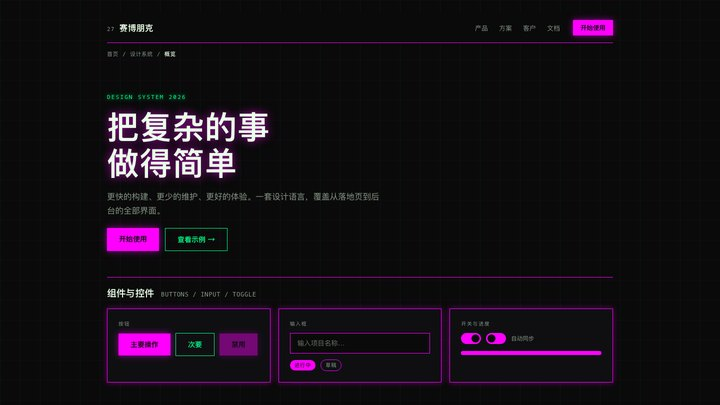
📋 复制给 AI 请用「赛博朋克」（Cyberpunk UI）这套视觉风格，帮我做一个页面。 它长什么样：高对比霓虹 + 纯黑 + 故障感，把反乌托邦科技做成视觉语言。 要抓住这几点：#0a0a0a 底+品红·亮绿霓虹 / 发光边框与文字辉光 / 等宽字体 / 零圆角 / glitch 抖动 配色：背景 #0a0a0a｜卡片 #0f0f12｜文字 #e9ffe9｜强调色 #ff00ff 形状：圆角 0｜卡片边 1px solid #ff00ff｜卡片阴影 0 0 12px rgba(255,0,255,.35) 不要出现：白底、圆角、柔和阴影、低饱和 我的需求：<换成你要做的页面> 27 科技与未来 赛博朋克Cyberpunk UI 高对比霓虹 + 纯黑 + 故障感，把反乌托邦科技做成视觉语言。 导出风格包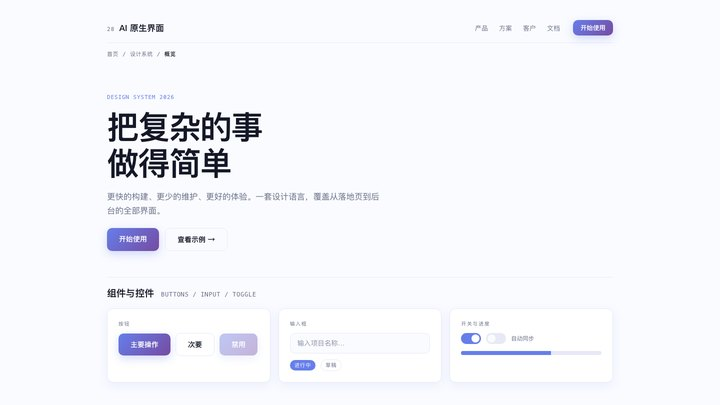
📋 复制给 AI 请用「AI 原生界面」（AI-Native UI）这套视觉风格，帮我做一个页面。 它长什么样：为 AI 产品长出来的视觉：蓝紫渐变、微光边框、对话优先的布局。 要抓住这几点：#667eea→#764ba2 蓝紫渐变 / 卡片蓝紫描边+微光 / 亮白底 / 12px 流线圆角 / chat-first 布局 配色：背景 #fafbff｜卡片 #ffffff｜文字 #141826｜强调色 #667eea 形状：圆角 12px｜卡片边 1px solid #e7e9f7｜卡片阴影 0 6px 20px rgba(102,126,234,.10) 不要出现：高饱和撞色、重描边、暗色底 我的需求：<换成你要做的页面> 28 科技与未来 AI 原生界面AI-Native UI 为 AI 产品长出来的视觉：蓝紫渐变、微光边框、对话优先的布局。 导出风格包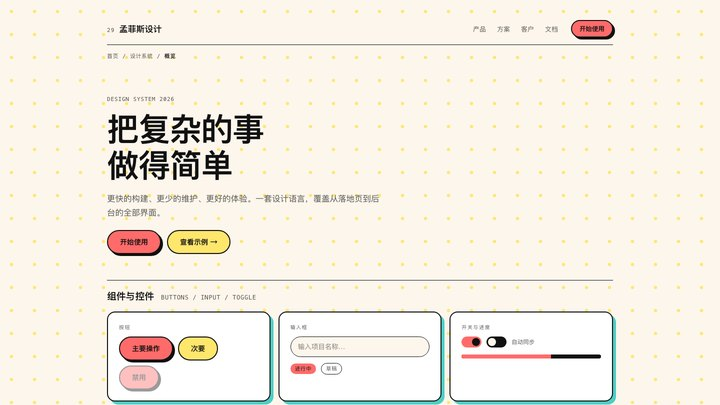
📋 复制给 AI 请用「孟菲斯设计」（Memphis Design）这套视觉风格，帮我做一个页面。 它长什么样：1981 年米兰的反现代主义：几何、撞色、波点，故意「不协调」。 要抓住这几点：粉·青·黄三色撞色 / 彩色硬阴影交替 / 波点锯齿装饰 / 错位拼贴 / 20px 胶囊按钮 配色：背景 #fdf6ec｜卡片 #ffffff｜文字 #111111｜强调色 #ff6b6b 形状：圆角 16px｜卡片边 2px solid #111｜卡片阴影 6px 6px 0 #4ecdc4 不要出现：克制配色、无装饰、直角、极简 我的需求：<换成你要做的页面> 29 粗野与反设计 孟菲斯设计Memphis Design 1981 年米兰的反现代主义：几何、撞色、波点，故意「不协调」。 导出风格包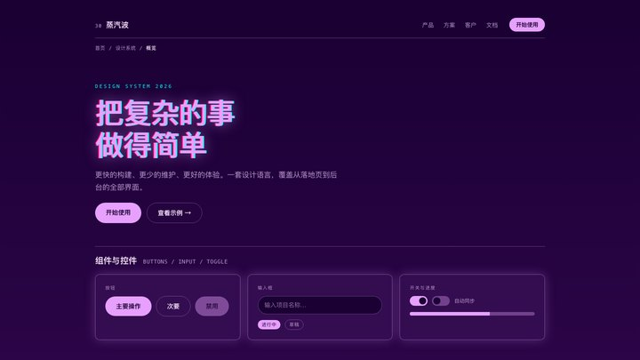
📋 复制给 AI 请用「蒸汽波」（Vaporwave）这套视觉风格，帮我做一个页面。 它长什么样：80 年代合成器音乐 + 消费主义残影，粉紫霓虹里带一点虚无。 要抓住这几点：粉紫霓虹 / 日英混排 / 大理石·棕榈·Windows 元素 / CRT 扫描线与色差 / 慢速循环 配色：背景 #1a0033｜卡片 rgba(60,20,90,.55)｜文字 #ffe6ff｜强调色 #e8a0ff 形状：圆角 10px｜卡片边 1px solid rgba(232,160,255,.4)｜卡片阴影 0 0 24px rgba(232,160,255,.25) 不要出现：亮色、锐利清晰、直角、无噪点 我的需求：<换成你要做的页面> 30 复古与怀旧 蒸汽波Vaporwave 80 年代合成器音乐 + 消费主义残影，粉紫霓虹里带一点虚无。 导出风格包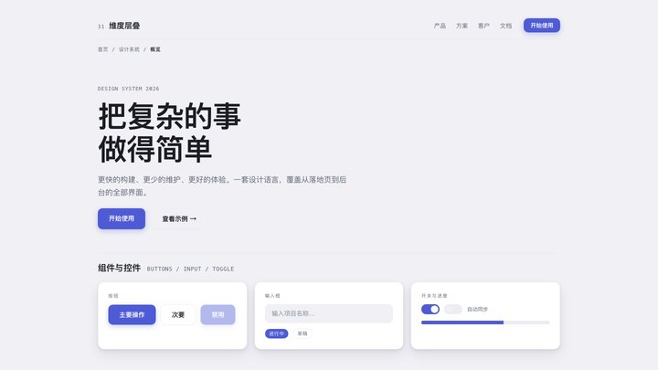
📋 复制给 AI 请用「维度层叠」（Dimensional Layering）这套视觉风格，帮我做一个页面。 它长什么样：用递进阴影搭出清晰的 Z 轴，让信息有「离你多远」的层次。 要抓住这几点：1·2·4·8px 递进阴影 / #f0f0f5 浅灰舞台 / 大卡片悬浮 / 1px #eee 极浅描边 配色：背景 #f0f0f5｜卡片 #ffffff｜文字 #1a1d24｜强调色 #4f5bd5 形状：圆角 14px｜卡片边 1px solid #ececf2｜卡片阴影 0 1px 2px rgba(20,25,50,.06),0 4px 10px rgba(20,25,50,.06),0 12px 28px rgba(20,25,50,.08) 不要出现：扁平无层次、零阴影、纯色块 我的需求：<换成你要做的页面> 31 质感与视觉基调 维度层叠Dimensional Layering 用递进阴影搭出清晰的 Z 轴，让信息有「离你多远」的层次。 导出风格包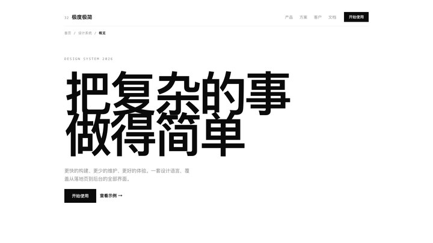
📋 复制给 AI 请用「极度极简」（Exaggerated Minimalism）这套视觉风格，帮我做一个页面。 它长什么样：把极简推到极端：字大到占满屏，其余什么都没有。 要抓住这几点：5rem·900 字重·-0.05em 字距 / 纯白底 / 无阴影无装饰 / 1px 细线分割 / 无 hover 配色：背景 #ffffff｜卡片 #ffffff｜文字 #0a0a0a｜强调色 #0a0a0a 形状：圆角 0｜卡片边 none｜卡片阴影 none 不要出现：阴影、圆角、装饰图形、彩色强调 我的需求：<换成你要做的页面> 32 排版与网格 极度极简Exaggerated Minimalism 把极简推到极端：字大到占满屏，其余什么都没有。 导出风格包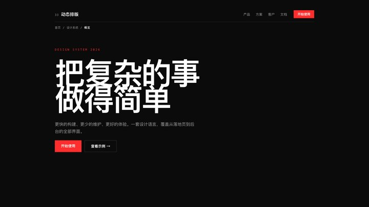
📋 复制给 AI 请用「动态排版」（Kinetic Typography）这套视觉风格，帮我做一个页面。 它长什么样：让文字本身成为主角，靠大小、节奏和动画制造海报级冲击。 要抓住这几点：6rem+ 超大标题 / line-height 0.9 / 黑白极端对比 / 滚动与逐字动画 / 影视海报感 配色：背景 #0b0b0b｜卡片 transparent｜文字 #ffffff｜强调色 #ff2d2d 形状：圆角 0｜卡片边 0｜卡片阴影 none 不要出现：小字号、多层信息、装饰插图、柔和配色 我的需求：<换成你要做的页面> 33 排版与网格 动态排版Kinetic Typography 让文字本身成为主角，靠大小、节奏和动画制造海报级冲击。 导出风格包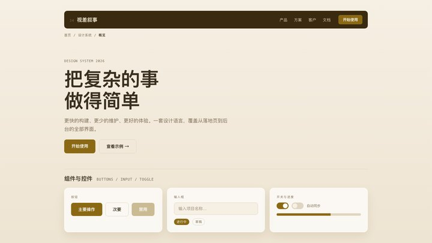
📋 复制给 AI 请用「视差叙事」（Parallax Storytelling）这套视觉风格，帮我做一个页面。 它长什么样：用滚动速度差讲故事，像翻一本有纵深的长卷。 要抓住这几点：多层滚动视差 / 半透明卡片透出背景 / 纵向渐变章节 / 长滚动节奏 / 品牌故事页 配色：背景 #f6efe3｜卡片 rgba(255,255,255,.72)｜文字 #3a2f1f｜强调色 #8b6914 形状：圆角 14px｜卡片边 1px solid rgba(255,255,255,.9)｜卡片阴影 0 12px 30px rgba(120,90,40,.12) 不要出现：纯色平铺、无纵深、扁平 我的需求：<换成你要做的页面> 34 动态与交互 视差叙事Parallax Storytelling 用滚动速度差讲故事，像翻一本有纵深的长卷。 导出风格包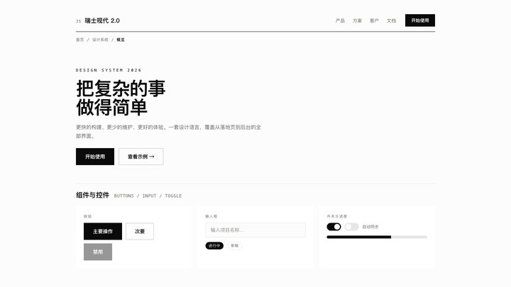
📋 复制给 AI 请用「瑞士现代 2.0」（Swiss Modernism 2.0）这套视觉风格，帮我做一个页面。 它长什么样：瑞士风格的极端化版本：去掉一切，只剩字重、行高和一条细线。 要抓住这几点：2px 顶部线分割 / 4rem·900 标题 / 0.85 行高 / 零阴影零圆角 / 纯白 #fcfcfc 配色：背景 #fcfcfc｜卡片 #ffffff｜文字 #0a0a0a｜强调色 #0a0a0a 形状：圆角 0｜卡片边 0｜卡片阴影 none 不要出现：阴影、圆角、装饰图形、多色 我的需求：<换成你要做的页面> 35 排版与网格 瑞士现代 2.0Swiss Modernism 2.0 瑞士风格的极端化版本：去掉一切，只剩字重、行高和一条细线。 导出风格包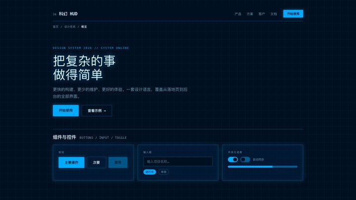
📋 复制给 AI 请用「科幻 HUD」（HUD / Sci-Fi FUI）这套视觉风格，帮我做一个页面。 它长什么样：电影里飞船控制台的界面语言：发光细线、角标框、滚动数据。 要抓住这几点：#001020 深空蓝 / 青色发光边框 / 等宽数据字体 / 环形与网格刻度 / 透明按钮 配色：背景 #001020｜卡片 rgba(0,40,80,.35)｜文字 #d6f2ff｜强调色 #00aaff 形状：圆角 2px｜卡片边 1px solid rgba(0,170,255,.45)｜卡片阴影 0 0 20px rgba(0,170,255,.18),inset 0 0 30px rgba(0,170,255,.06) 不要出现：圆角、柔和阴影、亮色、衬线字体 我的需求：<换成你要做的页面> 36 科技与未来 科幻 HUDHUD / Sci-Fi FUI 电影里飞船控制台的界面语言：发光细线、角标框、滚动数据。 导出风格包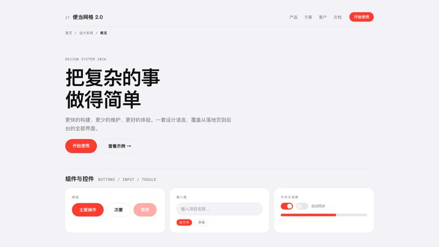
📋 复制给 AI 请用「便当网格 2.0」（Bento Grids 2.0）这套视觉风格，帮我做一个页面。 它长什么样：便当网格的年轻化版本：暖灰底、iPhone 红点缀、更松快的圆角。 要抓住这几点：#f2f2f7 暖灰底 / 20px 大圆角 / 无边框靠底色分区 / grid span 拼接 / 彩色点缀 配色：背景 #f2f2f7｜卡片 #ffffff｜文字 #111111｜强调色 #ff3b30 形状：圆角 20px｜卡片边 none｜卡片阴影 none 不要出现：边框、重阴影、低饱和、直角 我的需求：<换成你要做的页面> 37 排版与网格 便当网格 2.0Bento Grids 2.0 便当网格的年轻化版本：暖灰底、iPhone 红点缀、更松快的圆角。 导出风格包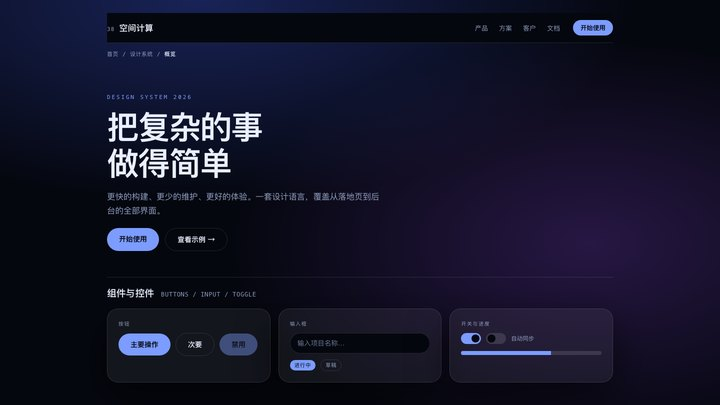
📋 复制给 AI 请用「空间计算」（Spatial UI / VisionOS）这套视觉风格，帮我做一个页面。 它长什么样：为头显和空间屏设计：界面像悬在空气里的玻璃板，有厚度、有光照。 要抓住这几点：blur(20px) 强模糊 / 22px 超大圆角 / 1px 微光玻璃轮廓 / 深空渐变 / 轻量景深 配色：背景 #05070f｜卡片 rgba(255,255,255,.06)｜文字 #eaf0ff｜强调色 #7c9cff 形状：圆角 22px｜卡片边 1px solid rgba(255,255,255,.12)｜卡片阴影 0 30px 80px rgba(0,0,0,.6) 不要出现：不透明面板、硬边、纯色底、重描边 我的需求：<换成你要做的页面> 38 科技与未来 空间计算Spatial UI / VisionOS 为头显和空间屏设计：界面像悬在空气里的玻璃板，有厚度、有光照。 导出风格包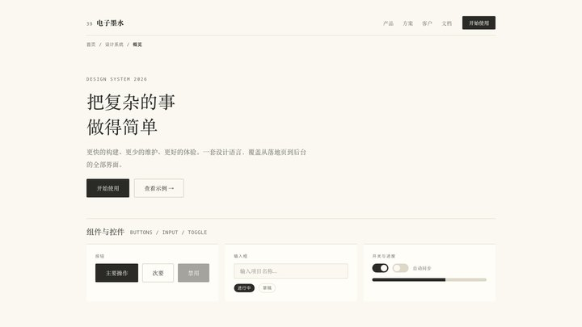
📋 复制给 AI 请用「电子墨水」（E-Ink & Paper）这套视觉风格，帮我做一个页面。 它长什么样：把屏幕做成纸：暖白底、衬线字、零阴影，为长时间阅读而生。 要抓住这几点：#faf8f0 纸色 / Georgia 衬线 / 1.8 行高 / 零阴影 / 1px 细线分割 / 无动效 配色：背景 #faf8f0｜卡片 #fffdf7｜文字 #2a2a26｜强调色 #2a2a26 形状：圆角 2px｜卡片边 0｜卡片阴影 none 不要出现：阴影、彩色强调、动效、渐变 我的需求：<换成你要做的页面> 39 自然·人文·无障碍 电子墨水E-Ink & Paper 把屏幕做成纸：暖白底、衬线字、零阴影，为长时间阅读而生。 导出风格包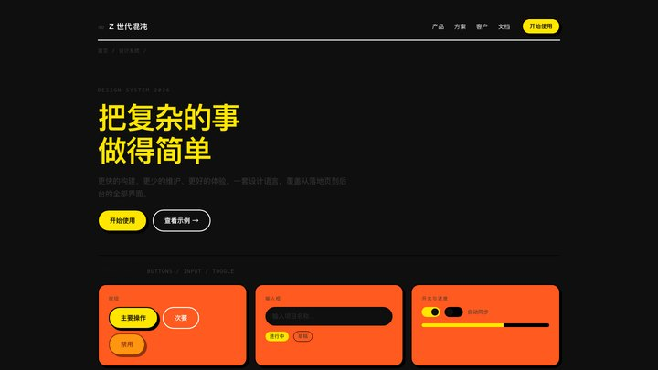
📋 复制给 AI 请用「Z 世代混沌」（Gen Z Chaos / Maximalism）这套视觉风格，帮我做一个页面。 它长什么样：精心设计的「乱七八糟」：高饱和、错位、贴纸感，反叛一切高级感。 要抓住这几点：亮黄·橙红高饱和 / 黑底白字混排 / 错位拼贴 / 粗边框+彩色硬阴影 / 30px 胶囊按钮 配色：背景 #0f0f0f｜卡片 #ff5a1f｜文字 #111111｜强调色 #ffe600 形状：圆角 18px｜卡片边 2px solid #000｜卡片阴影 4px 4px 0 #000 不要出现：克制、统一、对称、极简 我的需求：<换成你要做的页面> 40 粗野与反设计 Z 世代混沌Gen Z Chaos / Maximalism 精心设计的「乱七八糟」：高饱和、错位、贴纸感，反叛一切高级感。 导出风格包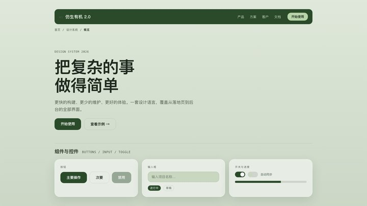
📋 复制给 AI 请用「仿生有机 2.0」（Biomimetic / Organic 2.0）这套视觉风格，帮我做一个页面。 它长什么样：不只借用自然的颜色，而是借用自然的生长逻辑与结构。 要抓住这几点：绿灰纵向渐变 / 半透明卡片像细胞壁 / 有机不规则圆角 / 生长与流动动画 配色：背景 #c9d6c0｜卡片 rgba(255,255,255,.5)｜文字 #1e2a1e｜强调色 #2a4a2a 形状：圆角 20px｜卡片边 1px solid rgba(255,255,255,.6)｜卡片阴影 0 14px 40px rgba(30,50,30,.12) 不要出现：纯几何、硬边、高对比黑白 我的需求：<换成你要做的页面> 41 自然·人文·无障碍 仿生有机 2.0Biomimetic / Organic 2.0 不只借用自然的颜色，而是借用自然的生长逻辑与结构。 导出风格包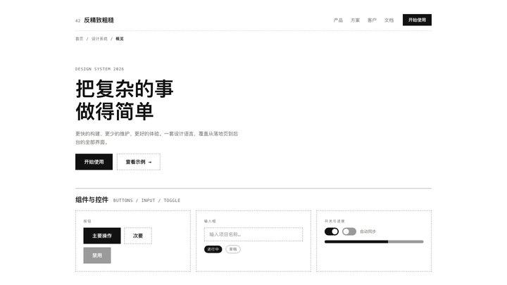
📋 复制给 AI 请用「反精致粗糙」（Anti-Polish / Raw Aesthetic）这套视觉风格，帮我做一个页面。 它长什么样：刻意不做设计：虚线框、系统字体、零圆角，像线框图直接上线。 要抓住这几点：dashed 虚线边框 / 等宽或系统字体 / 零圆角零阴影 / 无 hover / 纯文本排版 配色：背景 #ffffff｜卡片 #ffffff｜文字 #111111｜强调色 #111111 形状：圆角 0｜卡片边 1px dashed #999999｜卡片阴影 none 不要出现：圆角、渐变、精修阴影、装饰 我的需求：<换成你要做的页面> 42 粗野与反设计 反精致粗糙Anti-Polish / Raw Aesthetic 刻意不做设计：虚线框、系统字体、零圆角，像线框图直接上线。 导出风格包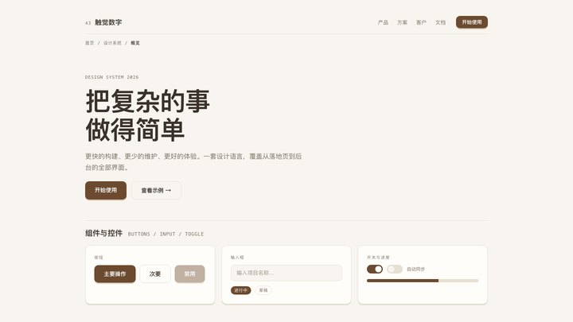
📋 复制给 AI 请用「触觉数字」（Tactile Digital / Deformable UI）这套视觉风格，帮我做一个页面。 它长什么样：让屏幕上的东西摸起来像纸、像布、像木头，靠厚度和形变传递温度。 要抓住这几点：底部 2px 实心投影做厚度 / active scale(0.98) 形变 / 棉纸亚麻底色 / 深棕木质按钮 配色：背景 #f8f5f0｜卡片 #fffdf9｜文字 #3a322a｜强调色 #6b4a2f 形状：圆角 12px｜卡片边 1px solid #e6dfd2｜卡片阴影 0 1px 0 rgba(0,0,0,.04),0 3px 0 #e8e2d8 不要出现：纯数字质感、无触感、扁平、高饱和 我的需求：<换成你要做的页面> 43 自然·人文·无障碍 触觉数字Tactile Digital / Deformable UI 让屏幕上的东西摸起来像纸、像布、像木头，靠厚度和形变传递温度。 导出风格包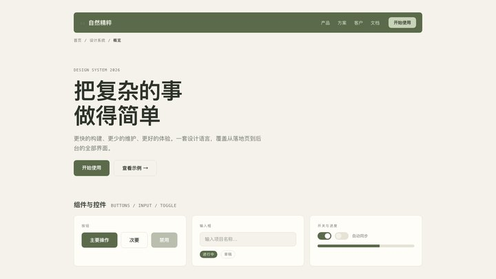
📋 复制给 AI 请用「自然精粹」（Nature Distilled）这套视觉风格，帮我做一个页面。 它长什么样：不画叶子不画山，只把自然提炼成比例、色温和克制的绿。 要抓住这几点：#f5f2eb 羊皮纸底 / 森林绿页眉 #5a6a4a / 0.03 极弱阴影 / 用色温而非阴影分区 配色：背景 #f5f2eb｜卡片 #fffdf8｜文字 #2d332a｜强调色 #5a6a4a 形状：圆角 10px｜卡片边 1px solid #ece7db｜卡片阴影 0 1px 2px rgba(60,70,50,.04) 不要出现：高饱和、强对比、装饰图形 我的需求：<换成你要做的页面> 44 自然·人文·无障碍 自然精粹Nature Distilled 不画叶子不画山，只把自然提炼成比例、色温和克制的绿。 导出风格包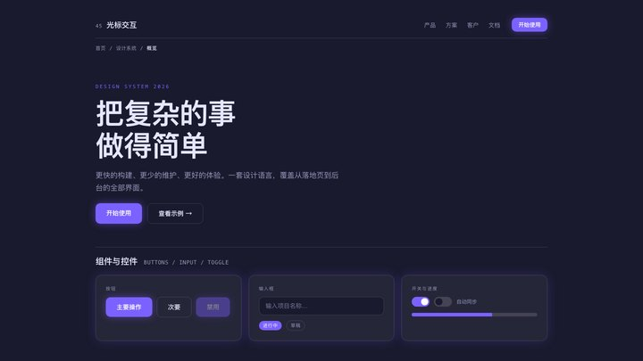
📋 复制给 AI 请用「光标交互」（Interactive Cursor Design）这套视觉风格，帮我做一个页面。 它长什么样：把鼠标指针变成主角：准星、拖尾、磁吸，光标本身就是导航。 要抓住这几点：自定义或十字准星光标 / 拖尾与磁吸 / 发光微辉卡片 / 深紫科技底 / 隐藏默认指针 配色：背景 #1a1a2e｜卡片 rgba(255,255,255,.05)｜文字 #e6e6ff｜强调色 #7b61ff 形状：圆角 14px｜卡片边 1px solid rgba(255,255,255,.12)｜卡片阴影 0 0 24px rgba(123,97,255,.22) 不要出现：默认光标、静态页面、无 hover 反馈 我的需求：<换成你要做的页面> 45 动态与交互 光标交互Interactive Cursor Design 把鼠标指针变成主角：准星、拖尾、磁吸，光标本身就是导航。 导出风格包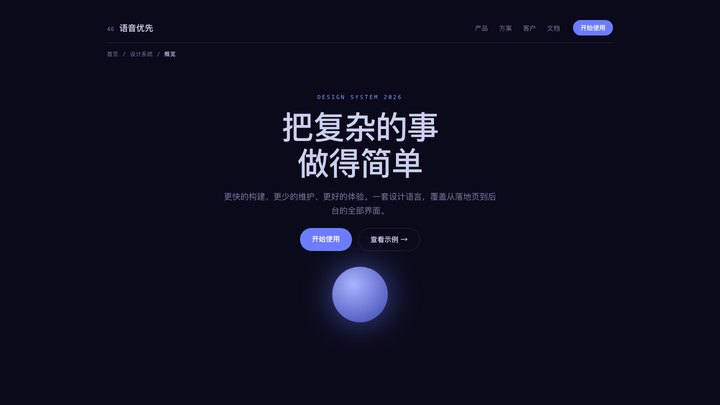
📋 复制给 AI 请用「语音优先」（Voice-First Multimodal）这套视觉风格，帮我做一个页面。 它长什么样：为「说话」而设计的界面：一个入口、一圈声波，其余全部退场。 要抓住这几点：#0a0a1a 极深底 / 柔和蓝紫文字 / 声波纹扩散动效 / 16px 大圆角 / 单一语音入口 配色：背景 #0a0a1a｜卡片 rgba(255,255,255,.045)｜文字 #ccd0ee｜强调色 #6d7cff 形状：圆角 16px｜卡片边 1px solid rgba(140,150,255,.16)｜卡片阴影 0 0 40px rgba(109,124,255,.18) 不要出现：密集信息、多个并列按钮、无主焦点 我的需求：<换成你要做的页面> 46 动态与交互 语音优先Voice-First Multimodal 为「说话」而设计的界面：一个入口、一圈声波，其余全部退场。 导出风格包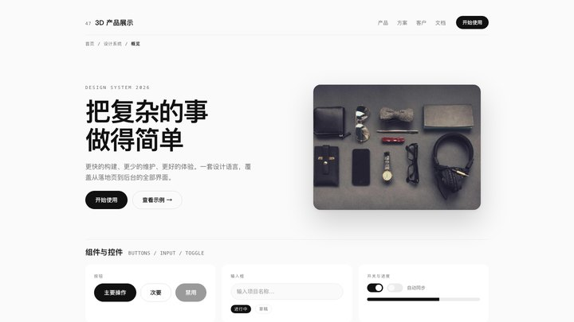
📋 复制给 AI 请用「3D 产品展示」（3D Product Preview）这套视觉风格，帮我做一个页面。 它长什么样：像摄影棚一样把产品放在无影墙前，让 3D 模型成为唯一内容。 要抓住这几点：浅色无影棚背景 / 产品居中悬浮+大投影 / 可旋转与配置器 / AR 预览 / 单色系统 配色：背景 #fafafa｜卡片 #ffffff｜文字 #111111｜强调色 #111111 形状：圆角 14px｜卡片边 none｜卡片阴影 none 不要出现：杂乱背景、多彩、装饰元素 我的需求：<换成你要做的页面> 47 科技与未来 3D 产品展示3D Product Preview 像摄影棚一样把产品放在无影墙前，让 3D 模型成为唯一内容。 导出风格包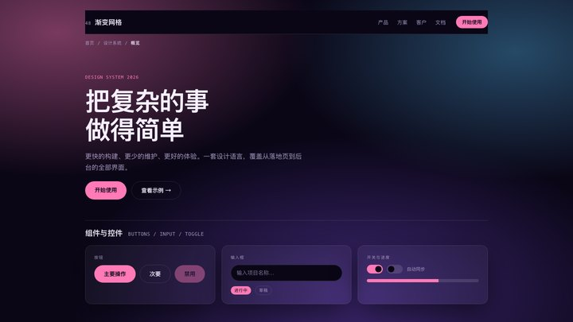
📋 复制给 AI 请用「渐变网格」（Gradient Mesh / Aurora Evolved）这套视觉风格，帮我做一个页面。 它长什么样：极光 UI 的进化版：多层多色光斑交织，像一张会呼吸的渐变网格。 要抓住这几点：多层 radial-gradient 网格叠加 / 0.04 极透玻璃卡片 / 描边随光斑变色 / 色彩反射按钮 配色：背景 #0a0616｜卡片 rgba(255,255,255,.04)｜文字 #f6efff｜强调色 #ff7ab6 形状：圆角 16px｜卡片边 1px solid rgba(255,255,255,.10)｜卡片阴影 0 24px 60px rgba(0,0,0,.5) 不要出现：纯色背景、不透明卡片、硬边 我的需求：<换成你要做的页面> 48 质感与视觉基调 渐变网格Gradient Mesh / Aurora Evolved 极光 UI 的进化版：多层多色光斑交织，像一张会呼吸的渐变网格。 导出风格包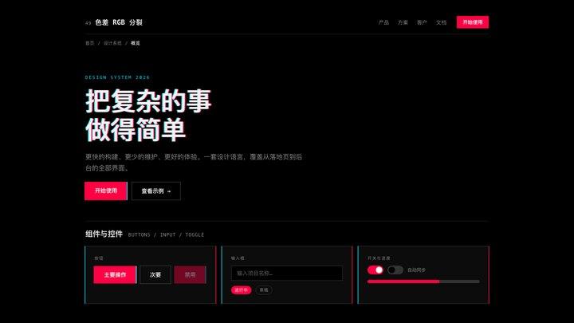
📋 复制给 AI 请用「色差 RGB 分裂」（Chromatic Aberration / RGB Split）这套视觉风格，帮我做一个页面。 它长什么样：把镜头色差这个「缺陷」变成设计语言，红绿蓝错位制造数字故障感。 要抓住这几点：红·绿·蓝错位描边 / text-shadow 2px 0 红、-2px 0 蓝 / 黑底等宽字体 / hover 错位跳变 配色：背景 #000000｜卡片 #0c0c0c｜文字 #f2f2f2｜强调色 #ff0044 形状：圆角 0｜卡片边 1px solid #333333｜卡片阴影 2px 0 0 rgba(255,0,68,.7),-2px 0 0 rgba(0,229,255,.7) 不要出现：柔和配色、圆角、低对比、无错位 我的需求：<换成你要做的页面> 49 粗野与反设计 色差 RGB 分裂Chromatic Aberration / RGB Split 把镜头色差这个「缺陷」变成设计语言，红绿蓝错位制造数字故障感。 导出风格包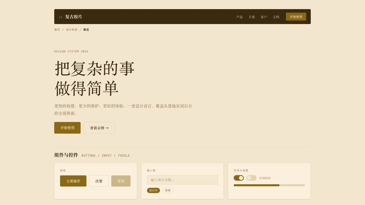
📋 复制给 AI 请用「复古胶片」（Vintage Analog / Retro Film）这套视觉风格，帮我做一个页面。 它长什么样：旧照片和旧书的气质：暖黄氧化色、胶片颗粒、棕色调。 要抓住这几点：#f5e8d0 暖黄纸色 / Georgia 衬线 / 胶片颗粒噪点 / #3a2a10 深棕页眉 / 古铜按钮 配色：背景 #f5e8d0｜卡片 #faf0dd｜文字 #3a2a10｜强调色 #8b6914 形状：圆角 4px｜卡片边 1px solid #e8d8b4｜卡片阴影 0 1px 3px rgba(80,60,20,.10) 不要出现：纯白、高饱和、锐利边缘、无颗粒 我的需求：<换成你要做的页面> 50 复古与怀旧 复古胶片Vintage Analog / Retro Film 旧照片和旧书的气质：暖黄氧化色、胶片颗粒、棕色调。 导出风格包